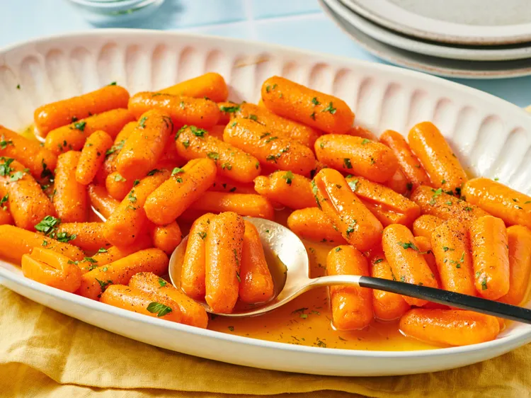

Back
Maple Glazed Crrots

Description
Boiled baby carrots are coated in maple syrup and butter for an easy weeknight side dish.
Home cooks enjoy customizing this simple recipe with extra spices or by roasting the carrots.
“I used large carrots, cut into strips. Wonderful.” —Allrecipes member Mary Songer Willard Frye
Ingredients
- Baby Carrots
- Maple Syrup
- Butter
- Salt and Black Pepper
- Parsley
Steps
- Gather all ingredients.
- Place carrots into a pot and cover with salted water; bring to a boil. Reduce heat to medium-low and simmer until tender, 15 to 20 minutes.
- Drain and transfer carrots to a serving bowl.
- Melt butter in a saucepan over medium-low heat. Stir maple syrup into melted butter and cook until warmed, 1 to 2 minutes.
- Pour over carrots and toss to coat; season with salt and ground black pepper.